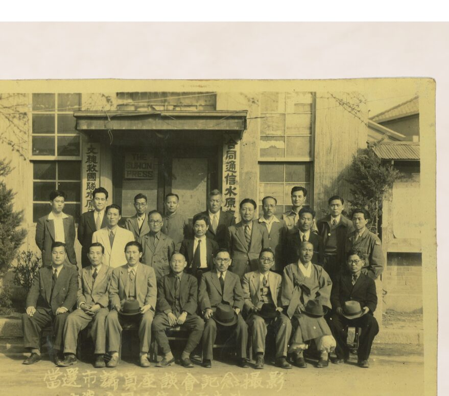
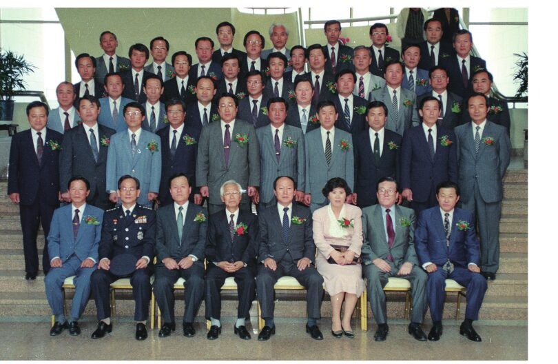

아테네 민주정의 추첨과 도편 추방에서 출발해, 근대 대의제와 중앙집권이 지방의 자기 통치성을 어떻게 약화시켰는지를 짚습니다. 수도권의 핵심 도시인 수원이 지방자치에 유리한 조건을 가졌다는 문제의식이 이 장 전체를 관통합니다.
1917년 지정면이 된 수원면에 면협의회가 설치되었습니다. 일정액 이상 세금을 낸 사람만 투표할 수 있는 제한선거였기에, 선출된 조선인 의원 대부분은 자산가층이었습니다.

제1대 당선 시의원 좌담회 기념 촬영 (1952년, 차인순 유족 제공)1952년 첫 시의회가 구성되었습니다. 제1대 의원 20명 가운데 14명이 농업 종사자였고, 다수가 동사무소 근무나 해방 공간의 우익 청년단 활동을 거쳐 의회에 들어왔습니다. 1961년 5·16 이후 지방의회는 해산됩니다.

제4대 수원시의회 개원 기념사진 (1991년, 수원시의회 소장)1991년 지방의회가 30년 만에 다시 구성되었습니다. 산업화와 인구 유입으로 수원의 계층 구조가 바뀌면서, 의원들의 직업과 출신 지역도 1950년대와 크게 달라졌습니다.
1991년 제4대 의회부터 여성 의원이 나타나기 시작해 그 수가 꾸준히 늘었습니다. 시민운동 출신 의원의 등장과 함께, 지방의회는 지역 유지의 자리에서 주민 자치의 통로로 바뀌어 갑니다.